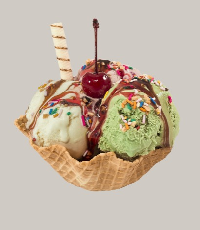
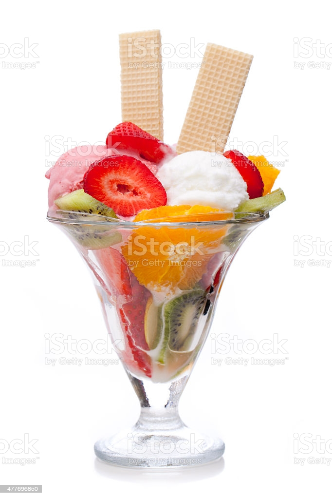
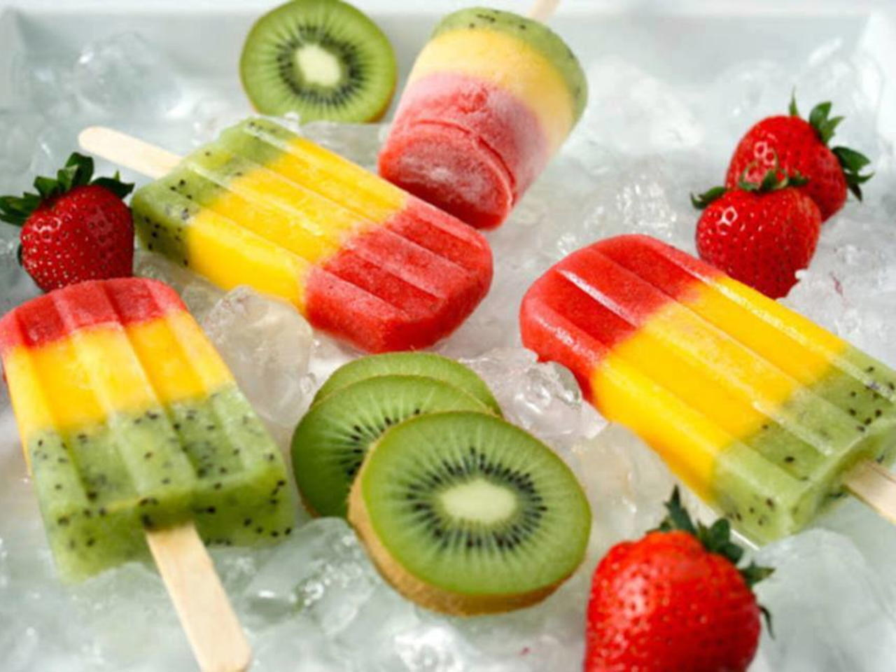

Home
Home
As mais antigas referências sobre as origens do sorvete incluem uma história sobre sua invenção entre os persas,
imperador romano Nero (37-68), que teria mandado trazer neve e gelo das montanhas e misturá-lo com frutas,
e outra do imperador chinês King Tang (618-697), que teria um método de combinar leite com água do rio.
A produção do picolé no Brasil teria sido iniciada em Cataguases, Minas Gerais, no final do século XIX.
Mas outras histórias dizem que o sorvete começou a ser confeccionado no ano de 1934, na cidade do
Rio de Janeiro, quando chegou, vindo de Boston, um navio com um carregamento de pêssego natural.
Fonte:Frutas Tropicais
Produto |
Valor |
Quantidade |
|  | R$15,00 | |
|  | R$25,00 | |
| R$5,00 | ||
|  | R$3,00 | |